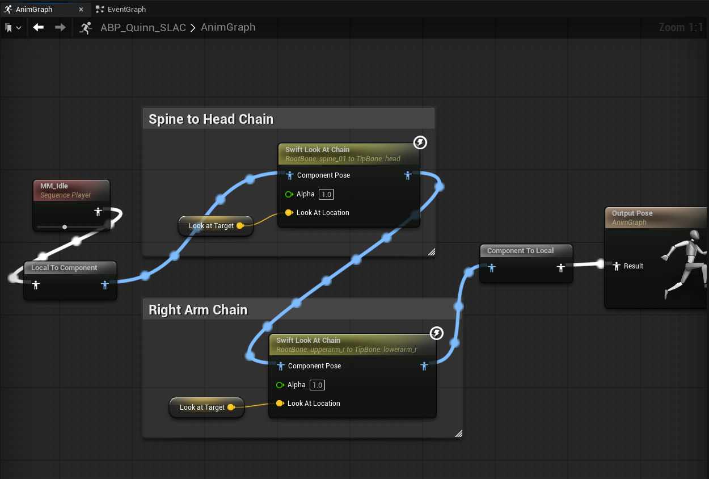
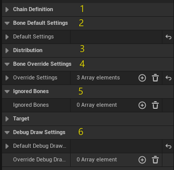
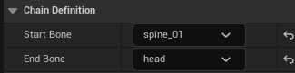
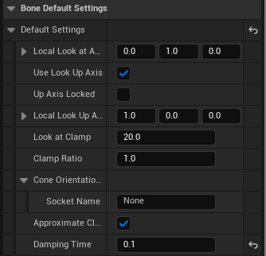
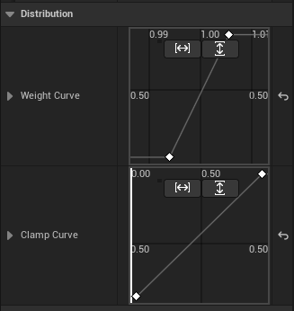
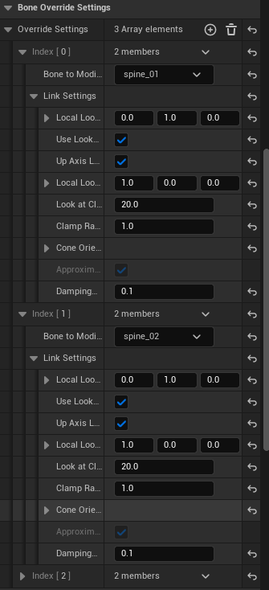
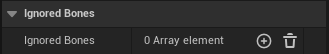
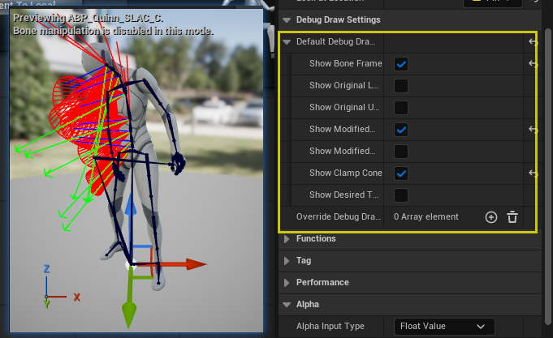

Welcome to Swift Look At Chain Manual
Overview
Swift Look At Chain is an extended version built on top of Swift Look At. It introduces the ability to drive an entire bone chain with a single node, making editing more intuitive, convenient, and efficient.
Features
-
Full Feature Inheritance — Retains nearly all features from Swift Look At for compatibility and a familiar workflow.
→ View Swift Look At on Fab · Documentation -
Bone Chain Control — Drive an entire chain with a single node, reducing setup complexity.
-
Weight Curve Distribution — Smoothly control how much each bone contributes to the Look At effect, enabling natural falloff (e.g., strong on the head, subtle on the spine).
-
Clamp Curve Distribution — Define per-bone rotation limits to ensure stable and believable motion.
-
Per-Bone Override Settings — Customize specific bones when defaults aren’t enough, for maximum flexibility.
Examples Project
- This demo video showcases the Swift Look At Chain plugin applied across various skeletal structures, including humanoid and dinosaur characters—covering head, spine, tail, and eye controls.
- Utilizing curve-driven weight adjustments, cone angle tuning, and axis hints, the plugin achieves smooth, natural look-at behaviors. All scenes were recorded in real-time within a playable environment, with no post-editing, offering a transparent view of the plugin's performance in practical use cases.
- Executable
- Examples Project
Quick Start Video
- Humanoid Setup
- Dino Setup
Node Setup
This section uses the humanoid character from the Example Project to demonstrate the Swift Look At Chain node.
We start with an AnimGraph overview, then focus on the Spine → Head chain UI and walk through areas 1–6.
Insert the corresponding close-up screenshots for each area.


Area 1｜Chain Definition
Purpose: Define the bone range driven by the chain.
Keys:
- Start Bone (e.g., spine_01)
- End Bone (e.g., head)
The system collects all continuous bones between Start and End to form the chain.

Area 2｜Default Bone Settings
Purpose: Provide a single default behavior for all bones in the chain. Any bone not explicitly overridden (Area 4) will use these defaults.
Common fields (examples):
- Local Look At Axis
- Use Look Up Axis / Up Axis Locked / Local Look Up Axis
- Look At Clamp / Clamp Ratio / Approximate Clamp / Cone Orientation Socket
- Damping Time (seconds)

Tip: Start with defaults. Only add overrides when a bone truly needs a different behavior.
Area 3｜Curves / Distribution
Purpose: Distribute influence and clamp intensity along the chain using two curves:
- Weight Curve — how much each bone contributes (0–1)
- Clamp Curve — how strong the angle limit is for each bone (0–1)
Sampling & normalization (important):
- Curves are uniformly sampled by bone index (from chain start to end).
- After sampling, the maximum value is normalized to 1.0, and all other samples are scaled relative to it (including the max itself).
- Focus on the shape/trend of the curve rather than absolute numbers.

Area 4｜Override Settings (Optional)
Purpose: Provide per-bone customization when a specific bone requires behavior different from the defaults (e.g., axes, clamp, damping).
Recommendations:
- If defaults work, don’t add overrides.
- Only create entries for bones that truly need different behavior.
- If multiple bones share the same policy, duplicate the entry and change the bone name.

Area 5｜Ignored Bones (Optional)
Purpose: Exclude bones that should not be processed by this chain (e.g., helper or special-purpose bones).
Typical use cases:
- Avoid conflicts when sharing control with physics or Control Rig
- Reduce evaluation by excluding visual-only bones

Area 6｜Debug Draw Settings
Purpose: Visualize the chain behavior in the viewport for development and teaching.
Common toggles:
- Show Bone Frame
- Show Original / Modified Look At Axis
- Show Original / Modified Up Axis
- Show Clamp Cone
- Show Desired Target

Suggested for early tuning: enable Clamp Cone, and Modified Axes.
Summary
- Minimal setup: Areas 1 (Chain) + 2 (Defaults) + 3 (Curves) are usually sufficient for a natural result.
- Advanced control: Use Area 4 (Overrides) only when specific bones require unique behavior.
- Debug efficiency: Area 6 (Debug) greatly improves iteration speed during development.
Properties
Runtime Node Properties
| Property | Description |
|---|---|
| Start Bone | Name of the first bone in the chain. Defines where the chain begins. |
| End Bone | Name of the last bone in the chain. Defines where the chain ends. |
| Default Settings | Default parameters applied to all bones in the chain, unless explicitly overridden. Includes axis definitions, clamp, up axis settings, and damping. |
| Weight Curve | Curve controlling the influence weight of each bone in the chain. Sampled at equal intervals, normalized by the maximum value, and applied per bone. |
| Clamp Curve | Curve controlling the clamp angle of each bone in the chain. Sampled at equal intervals, normalized by the maximum value, and used to scale clamp angles. |
| Look At Target | Target socket or bone to look at. Used if no explicit bone reference is provided. Supports offset via Look At Location. |
| Look At Location | Target offset. If LookAtBone is empty, it is in world space; otherwise, it is relative to LookAtBone or LookAtSocket local space. |
| Override Settings | Per-bone override configuration. Bones listed here will use custom settings instead of the default chain configuration. |
| Ignored Bones | Bones excluded from the look-at rotation. Useful for skipping specific joints. |
Per-Bone Settings (FLookAtChainLinkSettings)
| Property | Description |
|---|---|
| Local Look At Axis | Axis in local space that should point toward the target. |
| Use Look Up Axis | Whether to use an additional Up axis for stabilizing rotation. |
| Up Axis Locked | If enabled, locks the Up axis when Use Look Up Axis is active. |
| Local Look Up Axis | Defines the local Up axis direction when Use Look Up Axis is enabled. |
| Look At Clamp | Maximum look-at rotation in degrees. Rotation will be clamped within a cone. |
| Clamp Ratio | Ratio between pitch and yaw constraints when clamping. |
| Cone Orientation Socket | Optional socket providing a rotation offset for the clamp cone’s central axis. |
| Approximate Clamp | Optimization: available when Up Axis is enabled but not locked. Trades precision for better performance. |
| Damping Time | Damping time (seconds) for smoothing bone rotation. Smaller values = faster/snappier response; larger values = smoother/slower response. |
Debug Properties
| Property | Description |
|---|---|
| Default Debug Draw Settings | Global default visualization settings applied to the entire chain. |
| Override Debug Draw Settings | Per-bone override visualization settings. Specific bones can have custom debug draw toggles, independent of the default. |
| Show Bone Frame | Display the local coordinate system axes of each bone. |
| Show Original Look At Axis | Display the bone’s original Look At axis before modification. |
| Show Original Up Axis | Display the bone’s original Up axis before modification. |
| Show Modified Look At Axis | Display the bone’s Look At axis after modification. |
| Show Modified Up Axis | Display the bone’s Up axis after modification. |
| Show Clamp Cone | Display the clamp cone used to limit rotation. |
| Show Desired Target | Display the final desired target position. |
You’ve made it all the way down here — if you’re still not sure, just drop us a line at kontiki-games@hotmail.com to request an evaluation version.